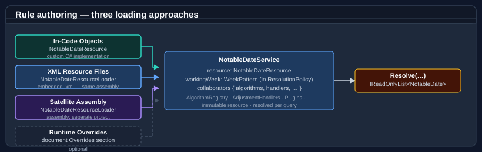

Authoring notable date rules
A notable date is defined by a rule document on the notable-date schema (urn:bodu:globalization:calendar): author it as XML or JSON, then load it into an immutable NotableDateResource with NotableDateResourceLoader. There is no mutable rule-object graph and no rule-provider interface — a rule is a <Rule> element, and a service is built over the loaded resource. This guide covers the document model directly; to assemble the same document fluently in C# instead, see Authoring with the notable-date builder.
This guide walks the document model top to bottom: the <NotableDateResource> root and its child order, how a <NotableDate> concept carries one or more <Rule> recipes, the <Strategy> and <Recurrence> occurrence sources, importing the bundled common catalogues with <Imports>, and ID-targeted edits with <Overrides>. For the full strategy catalogue see Notable-date rule strategies. For the vocabulary it assumes (document vs. resource, concept vs. rule, nominal vs. observed, territory containment) read Core concepts first. For the per-element field reference, see NotableDateRule and adjustment-policy reference.

Document structure
A document is a single <NotableDateResource> element. It declares the schema namespace, a schemaVersion, and a resourceId, and contains its child sections in this order:
| Child element | Required | Purpose |
|---|---|---|
<Metadata> |
No | Name, Description, and zero or more Source provenance entries. |
<ResolutionPolicy> |
No | Resource-level duplicate / collision / observed-date policy and the working week. |
<AdjustmentPolicies> |
No | Reusable, named adjustment policies referenced by rules via policyRef. |
<Imports> |
No | Pulls concepts in from the bundled common catalogues. |
<NotableDates> |
No | The locally declared concepts (each with one or more rules). |
<Overrides> |
No | ID-targeted AddRule / PatchRule / RemoveRule edits applied at load time. |
A minimal document declares a single fixed-date concept:
<?xml version="1.0" encoding="utf-8"?>
<NotableDateResource xmlns="urn:bodu:globalization:calendar" schemaVersion="1.0" resourceId="demo">
<NotableDates>
<NotableDate id="new-years-day" displayName="New Year's Day" category="PublicHoliday" defaultNonWorkingDay="true">
<Rules>
<Rule id="default">
<Strategy><Fixed month="January" day="1" /></Strategy>
</Rule>
</Rules>
</NotableDate>
</NotableDates>
</NotableDateResource>
id values follow the schema's identifier pattern — lowercase, digits, and hyphens (new-years-day, good-friday). resourceId additionally allows dots (data.au, common.global-buddhist).
Concepts and rules
A <NotableDate> is one notable-date concept — an id, a displayName, a default category, and a <Rules> block of one or more <Rule> recipes. Optional concept-level attributes set defaults the rules inherit: defaultNonWorkingDay marks the concept as a closure, and defaultDurationDays gives multi-day events their span.
<NotableDate id="anzac-day" displayName="Anzac Day" category="Remembrance" defaultNonWorkingDay="true">
<Tags>
<Tag value="national" />
</Tags>
<Rules>
<Rule id="default">
<Strategy><Fixed month="April" day="25" /></Strategy>
</Rule>
</Rules>
</NotableDate>
A <Rule> is one calculation recipe. Its required id distinguishes it from its siblings under the same concept; the optional attributes (priority, category, nonWorking, durationDays, comment) override the concept defaults for that recipe. A rule contains, in order:
- an optional
<Applicability>(calendar, year bounds, territory scope); - exactly one
<Strategy>(the calculation); - an optional
<Tags>block; - an optional
<Adjustments>block ofpolicyRefreferences.
<Rule id="au" priority="100" comment="National; substitute Monday when 26 January falls on a weekend.">
<Applicability calendar="Gregorian"><Territory code="AU" /></Applicability>
<Strategy><Fixed month="January" day="26" /></Strategy>
<Tags><Tag value="national" /></Tags>
<Adjustments><Adjustment policyRef="weekend-roll" /></Adjustments>
</Rule>
A concept holds several rules when the same date is observed differently across subdivisions or years — for example one Labour-Day rule per Australian state, each scoped to its subdivision and carrying its own <Strategy>. The engine resolves the most-specific rule that applies to the requested territory and year. See NotableDateRule and adjustment-policy reference for every attribute.
The strategy elements
A rule's occurrence source is a <Strategy> child holding exactly one strategy element, each mapping to a public IDateCalculationStrategy. The six most common describe a single date by calendar arithmetic or by reference to another rule:
<Strategy> element |
What it computes |
|---|---|
<Fixed> |
A specific month + day every year (e.g. 1 January), optionally in a non-Gregorian calendar. |
<DayOfWeekInMonth> |
The nth or last weekday in a month (e.g. fourth Thursday in November). |
<WeekdayNearDate> |
A weekday on / before / after / nearest a fixed reference date (e.g. the Monday on or before 24 May). |
<RelativeWeekdayInMonth> |
A weekday positioned relative to a weekday-in-month anchor (e.g. the Tuesday after the first Monday in November). |
<OffsetFromRule> |
A signed day-offset from another rule's occurrence (e.g. Easter Sunday − 2 = Good Friday). |
<Algorithm> |
Delegated to a named algorithm key for astronomical / ecclesiastical dates (Easter, Vesak, Diwali, …). |
A one-line example of each:
<Strategy><Fixed month="January" day="1" /></Strategy>
<Strategy><DayOfWeekInMonth month="11" dayOfWeek="Thursday" weekOrdinal="Fourth" /></Strategy>
<Strategy><WeekdayNearDate month="5" day="24" dayOfWeek="Monday" direction="OnOrBefore" /></Strategy>
<Strategy><RelativeWeekdayInMonth month="11" dayOfWeek="Monday" weekOrdinal="First"
relativeDayOfWeek="Tuesday" direction="After" /></Strategy>
<Strategy><OffsetFromRule notableDateRef="easter-sunday" ruleRef="default" offsetDays="-2" /></Strategy>
<Strategy><Algorithm key="western-easter" /></Strategy>
Alongside these, the schema provides positional strategies (<OrdinalDayOfMonth>, <DayOfYear>, <IsoWeekDate>), dynamic-reference strategies (<WeekdayNearRule>, <NthWeekdayFromRule>), and business-day strategies (<WorkingDayOffsetFromRule>, <WorkingDayInMonth>) that resolve against the working-week and applicable non-working occurrences. A rule may instead declare a <Recurrence> — a repeating cadence (<DailyInterval>, <Weekly>, <MonthlyDay>, <MonthlyWeekday>) that yields many occurrences — and may carry a <Duration> whose end date is either a fixed day count or calculated from a second strategy. The complete catalogue, with a choosing guide and a common-scenarios cookbook, is Notable-date rule strategies.
month accepts either a number (1–12) or an English month name (January). weekOrdinal is a WeekOrdinal value (First…Fifth, Last); direction is a WeekdayProximity value (Before, OnOrBefore, Nearest, OnOrAfter, After). For per-element attribute tables and worked examples see NotableDateRule and adjustment-policy reference; for the <Algorithm> key catalogue and custom algorithms see Date calculation algorithms.
Adjustment policies
A weekend-substitution or "move-to-next-working-day" shift is authored once as a reusable <AdjustmentPolicy> in <AdjustmentPolicies>, then referenced from any rule via <Adjustment policyRef="...">. Adjustments are always referenced by id — there are no inline per-rule adjustment definitions.
<AdjustmentPolicies>
<AdjustmentPolicy id="weekend-roll" priority="100"
description="If the holiday falls on a weekend, observe it on the following Monday.">
<Trigger type="IfWeekend" />
<Action type="MoveToNextWorkingDay" skipWeekends="true" skipNonWorkingDates="false" maxSearchDays="7" />
<Emission mode="ObservedOnly" reason="Substitute public holiday" />
</AdjustmentPolicy>
</AdjustmentPolicies>
A policy pairs a <Trigger> (when it fires) with an <Action> (what it does) and an <Emission> (whether the actual day, the observed day, or both are emitted), plus an optional <Scope> that limits it to a territory, calendar, category, or year range. A rule opts in by reference:
<Rule id="au">
<Applicability calendar="Gregorian"><Territory code="AU" /></Applicability>
<Strategy><Fixed month="January" day="26" /></Strategy>
<Adjustments><Adjustment policyRef="weekend-roll" /></Adjustments>
</Rule>
The full trigger, action, emission, and scope vocabulary — and the worked weekend-substitution patterns for AU/NZ, the UK, and the US — are covered in Observance adjustment rules and Holiday patterns and examples.
Importing the common catalogues
A regional document rarely starts from scratch. The base package ships a set of common catalogues — global-core, christian-western, global-family, global-remembrance, global-cultural, global-buddhist, global-hindu, and friends — that carry the bare calculation strategy for shared concepts. An <Import> pulls those concepts in; the local document supplies the territory scope, category, non-working flag, and any adjustment.
<Imports>
<Import resource="global-core">
<Use notableDateRef="new-years-day" territory="AU">
<Adjustments><Adjustment policyRef="weekend-roll" /></Adjustments>
</Use>
</Import>
<Import resource="christian-western">
<Use notableDateRef="good-friday" territory="AU" />
<Use notableDateRef="easter-sunday" territory="AU" />
<Use notableDateRef="easter-monday" territory="AU" />
<Use notableDateRef="christmas-day" territory="AU">
<Adjustments><Adjustment policyRef="working-day-substitute" /></Adjustments>
</Use>
</Import>
</Imports>
Each <Import resource="..."> names a catalogue. Inside it, a <Use> directive cherry-picks one concept by notableDateRef and may:
- rename it locally with
as, - re-scope it to a
territory, - override the
categoryornonWorkingflag, - attach adjustment policies via a nested
<Adjustments>block.
An <Import> with no <Use> children imports every concept in the catalogue. When a local concept and an imported concept share an id, the local one wins. The catalogue names accepted by the resolver include default-minimal, global-core, global-all, christian-western, christian-orthodox, global-islamic, global-hindu, global-jewish, global-buddhist, global-cultural, global-remembrance, and the UN / health / science / education / environment / food / family / social families.
Loading a document that imports
<Imports> are resolved by a Func<string,string?> passed to the loader. CommonNotableDateResources exposes that resolver over the bundled catalogues — pass CommonNotableDateResources.Resolver:
using Bodu.Globalization.Calendar;
NotableDateResource resource =
NotableDateResourceLoader.Load(xml, CommonNotableDateResources.Resolver);
NotableDateService service = new NotableDateService(resource);
A document with no <Imports> loads with the single-argument overload, NotableDateResourceLoader.Load(xml). The companion Bodu.Globalization.Calendar.<Region> data packs are built exactly this way — each region resource imports from the common catalogues and is loaded through the same resolver. See Calendar data packs.
ID-targeted overrides
<Overrides> are edits applied at load time, after imports are resolved, targeted by id. They let a regional document tweak an imported concept without forking it. Three operations are available:
<AddRule notableDateRef="...">wraps a new<Rule>and appends it to an existing concept.<PatchRule notableDateRef="..." ruleRef="...">replaces parts of an existing rule. The targeting attributes are required; scalar attributes (priority,category,nonWorking,durationDays,comment) patch in place, and a nested<Applicability>,<Strategy>,<Tags>, or<Adjustments>replaces that section wholesale.<RemoveRule notableDateRef="..." ruleRef="..."/>deletes a single rule.
<Overrides>
<!-- Suppress an imported rule for this consumer … -->
<RemoveRule notableDateRef="boxing-day" ruleRef="default" />
<!-- … bump another rule's priority and re-scope it … -->
<PatchRule notableDateRef="labour-day" ruleRef="default" priority="200">
<Applicability calendar="Gregorian"><Territory code="AU-VIC" /></Applicability>
</PatchRule>
<!-- … and add a company event to an existing concept. -->
<AddRule notableDateRef="company-founding-day">
<Rule id="hq">
<Applicability calendar="Gregorian"><Territory code="AU" /></Applicability>
<Strategy><Fixed month="June" day="15" /></Strategy>
</Rule>
</AddRule>
</Overrides>
Overrides run during loading and produce a normal immutable resource. Runtime change (swapping the rule set after the service is built) is a separate mechanism: load a new resource and hand it to a MutableNotableDateResourceProvider, then resolve through a ReloadableNotableDateService. See Using NotableDateService.
Authoring in JSON
JSON is an equivalent surface for the same document model; the choice is presentation-only. Load it with NotableDateResourceLoader's LoadJson overloads (LoadJson(json), LoadJson(json, resolver), LoadJson(Stream)). The element names map directly to JSON property names:
{
"schemaVersion": "1.0",
"resourceId": "demo",
"notableDates": [
{
"id": "new-years-day",
"displayName": "New Year's Day",
"category": "PublicHoliday",
"defaultNonWorkingDay": true,
"rules": [
{
"id": "default",
"strategy": { "fixed": { "month": "January", "day": 1 } }
}
]
}
]
}
using Bodu.Globalization.Calendar;
NotableDateResource resource = NotableDateResourceLoader.LoadJson(json, CommonNotableDateResources.Resolver);
The larger sections map the same way: <AdjustmentPolicies> → adjustmentPolicies, with <Trigger> / <Action> / <Emission> becoming the nested trigger / action / emission objects; <Adjustments> becomes an adjustments array of policy-id strings; and <Imports> becomes imports, each entry a resource plus a uses array:
{
"schemaVersion": "1.0",
"resourceId": "data.au",
"adjustmentPolicies": [
{
"id": "weekend-roll",
"priority": 100,
"trigger": { "type": "IfWeekend" },
"action": { "type": "MoveToNextWorkingDay", "maxSearchDays": 7 },
"emission": { "mode": "ObservedOnly", "reason": "Substitute public holiday" }
}
],
"imports": [
{
"resource": "global-core",
"uses": [
{ "notableDateRef": "new-years-day", "territory": "AU", "adjustments": ["weekend-roll"] }
]
}
],
"notableDates": [
{
"id": "australia-day",
"displayName": "Australia Day",
"category": "PublicHoliday",
"defaultNonWorkingDay": true,
"rules": [
{
"id": "au",
"applicability": { "calendar": "Gregorian", "territories": ["AU"] },
"strategy": { "fixed": { "month": "January", "day": 26 } },
"adjustments": ["weekend-roll"]
}
]
}
]
}
JSON and XML are accepted by separate loader entry points — LoadJson for JSON, Load for XML — and produce identical resources; there is no auto-detection.
Year periodicity
Beyond fromYear / toYear bounds, <Applicability> supports a periodicity pair for rules that recur every nth year: everyYears sets the period and anchorYear the reference year it is counted from. A quadrennial civic day active from a known base year is everyYears="4" with anchorYear="2024". They surface on the loaded NotableDateRule's applicability alongside OnlyYears / ExceptYears. See NotableDateRule and adjustment-policy reference.
Validation
Loading parses the document, resolves <Imports>, applies <Overrides>, assembles the concepts, and runs semantic validation. Any error-severity diagnostic throws a NotableDateValidationException; its Diagnostics collection carries every NotableDateValidationDiagnostic ( Severity, Code, Message), so informational and warning diagnostics are visible even when the load succeeds:
using Bodu.Globalization.Calendar;
try
{
NotableDateResource resource = NotableDateResourceLoader.Load(xml, CommonNotableDateResources.Resolver);
}
catch (NotableDateValidationException ex)
{
foreach (NotableDateValidationDiagnostic d in ex.Diagnostics)
Console.WriteLine($"{d.Severity} {d.Code}: {d.Message}");
}
Typical errors include a duplicate concept or rule id, an unknown adjustment policyRef, an unknown <Algorithm> key, an impossible fixed date, or a fromYear after toYear.
Where to go next
- Using NotableDateService — loading resources, querying by date / range / year, and filtering.
- Notable-date rule strategies — every occurrence source and duration, with a choosing guide and common-scenarios cookbook.
- NotableDateRule and adjustment-policy reference — the per-element field reference for the document model.
- Date calculation algorithms — the strategy kinds, the built-in
<Algorithm>keys, and custom algorithms. - Observance adjustment rules — the full trigger / action / emission catalogues for
<AdjustmentPolicy>. - Working with non-Gregorian calendars —
<Fixed>dates in Hijri / Hebrew / Persian / Chinese lunisolar calendars. - Calendar data packs — the official Americas / Asia-Pacific / Europe / Middle East / Africa resources, built from these same imports.
- Bodu.Globalization.Calendar API reference — full type reference.
- Globalization & Calendars guides — every guide in this topic: the runtime, companions, data packs, and the notable-date catalogue.